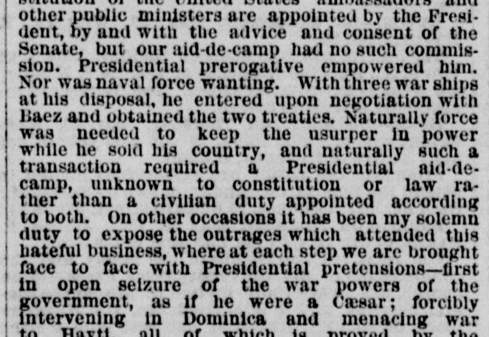
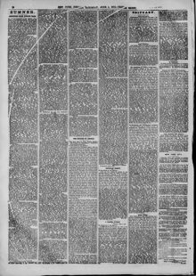

See the full pageVer la página completaNaturally force was needed to keep the usurper in power whileNaturalmente, se necesitaba la fuerza para mantener al usurpador en el poder mientras
The New York Herald reported that the President utilized three warships and a presidential aide—operating outside constitutional and legal authority—to negotiate two treaties and keep a usurper in power in Dominica. According to the excerpt, these official actions involving intervention in Dominica and threats against Hayti constituted an unconstitutional seizure of the government's war powers and a disregard for the equality of nations.The New York Herald afirmó que el presidente se valió de tres buques de guerra y de un edecán militar —actuando al margen de la Constitución y de las facultades legales— para negociar dos tratados y sostener en el poder a un usurpador en Santo Domingo. A juicio del escrito, tales intervenciones oficiales en Santo Domingo y las intimidaciones lanzadas contra Haití constituyeron una usurpación inconstitucional de las potestades bélicas del Estado y un palmario desprecio a la igualdad jurídica de las naciones.
FULL TEXT:TRADUCCIÓN:
On his return to Washington the young man who had assumed to be "Aid-de-Camp of His Excellency General Ulysses S. Grant," and had bound the President to become a lobbyist for a wretched usurpation, instead of being disavowed and reprimanded, was sent back to the usurper with instructions to negotiate two treaties—one for the annexation of the half island of Dominica, and the other for the lease of the Bay of Samana. By the constitution of the United States ambassadors and other public ministers are appointed by the President, by and with the advice and consent of the Senate; but our aid-de-camp had no such commission. Presidential prerogative empowered him. Nor was naval force wanting. With three war ships at his disposal, he entered upon negotiation with Baez and obtained the two treaties. Naturally force was needed to keep the usurper in power while he sold his country, and naturally such a mission required a Presidential aid-de-camp unknown to constitution or law rather than a civilian duly appointed according to law.A su regreso a Washington el joven que había asumido ser «Ayudante de Campo de Su Excelencia el General Ulysses S. Grant», y había comprometido al Presidente a convertirse en un cabildero de una miserable usurpación, en lugar de ser desautorizado y reprendido, fue enviado de vuelta al usurpador con instrucciones de negociar dos tratados—uno para la anexión de la mitad de la isla de Dominica, y el otro para el arrendamiento de la Bahía de Samaná. Por la constitución de los Estados Unidos los embajadores y otros ministros públicos son nombrados por el Presidente, por y con el consejo y consentimiento del Senado; pero nuestro ayudante de campo no tenía tal comisión. La prerrogativa presidencial lo facultó. Tampoco faltó la fuerza naval. Con tres buques de guerra a su disposición, entró en negociación con Báez y obtuvo los dos tratados. Naturalmente se necesitaba fuerza para mantener al usurpador en el poder mientras vendía su país, y naturalmente tal misión requería un ayudante de campo presidencial desconocido para la constitución o la ley antes que un civil debidamente nombrado según la ley.
On other occasions it has been my solemn duty to expose the outrages which attended this dark business, where at each step we are brought face to face with Presidential pretensions—first in the seizure of the war powers of the Government, as if he were a Caesar; forcibly intervening in Dominica and menacing war upon Hayti, all of which is proved by the official reports of the State Department and Navy Department, being nothing less than war by kingly prerogative in defiance of that distinctive principle of republican government first embodied in our Constitution, which places the war powers under the safeguard of the legislative branch, making any attempt by the President to declare war an undoubted usurpation.En otras ocasiones ha sido mi deber solemne exponer los ultrajes que acompañaron este oscuro negocio, donde a cada paso somos llevados cara a cara con pretensiones presidenciales—primero en la apropiación de los poderes de guerra del Gobierno, como si él fuera un César; interviniendo por la fuerza en Dominica y amenazando con guerra a Haití, todo lo cual está probado por los informes oficiales del Departamento de Estado y el Departamento de Marina, siendo nada menos que guerra por prerrogativa real en desafío de ese principio distintivo del gobierno republicano incorporado por primera vez en nuestra Constitución, que coloca los poderes de guerra bajo la salvaguardia de la rama legislativa, haciendo cualquier intento del Presidente de declarar la guerra una indudable usurpación.
The New York Herald. New York, June 1, 1872.
See the original at the Library of CongressVer el original en la Biblioteca del Congreso
Also published as the New York Daily HeraldTambién publicado como New York Daily Herald
Published by: James Gordon BennettPublicado por: James Gordon Bennett
Edition: Morning Edition (Edition 1)Edición: edición de la mañana (edición 1)
Page: 10Página: 10
Frequency: daily (1840–1920)Frecuencia: diario (1840–1920)
Collection: Chronicling America, Library of CongressColección: Chronicling America, de la Biblioteca del Congreso
LCCN: sn83030313LCCN: sn83030313
ISSN: 2474-3224ISSN: 2474-3224
OCLC: 9467138OCLC: 9467138
Call Number: Newspaper E457.5 .N3Signatura (Call Number): Newspaper E457.5 .N3
Rights: public domain, according to the Library of CongressDerechos: dominio público, según la Biblioteca del Congreso